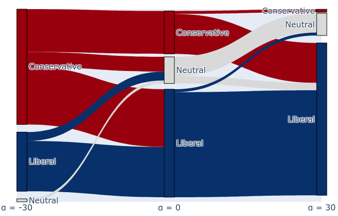

Introduction
Large language models (LLMs) encode rich internal representations of political ideology, but it remains unclear how these representations contribute to model decision-making. In our work, we examine whether latent ideological directions in LLMs generalize across political tasks? And do these latent structures reflect real-world socio-political constructs?
Key Findings
- Cross-Task Generalization ▸ Latent ideological directions identified with linear probes are functionally engaged and generalize across a range of political reasoning tasks.
- Partial Disentanglement ▸ While the ideological dimension identified with DW-NOMINATE scores correlate strongly with bias detection, they show limited effect on behavioral tasks like vote simulation.
- Asymmetrical Effects ▸ Leftward (progressive) interventions tend to produce coherent results, while rightward (conservative) interventions are often less effective and can degrade the model's output fluency.
Methodology
The study uses a three-step methodology. First, we probe for latent ideological representations by training linear ridge models on the activations of attention heads. These probes are trained to predict the DW-NOMINATE scores of U.S. lawmakers.
We then apply inference-time interventions to steer the model. During text generation, the activations \(x\) of the top-k predictive heads are modified by adding the learned direction vector, i.e., the ridge model coefficients \(\theta\), scaled by a strength factor \(\alpha \in [-30, 30]\): \[x \leftarrow x + \alpha \sigma \theta\] A negative \(\alpha\) steers liberal, while a positive \(\alpha\) steers conservative.
Finally, we evaluate the effect of this steering on three downstream tasks: 1) Political Bias Detection, 2) Voting Preference Prediction, and 3) Bias Neutralization via Rewriting. This tests whether the ideological direction learned from one context generalizes to and causally influences other political reasoning tasks.
Task 1: Political Bias Detection
Task: We prompt the model to classify 240 synthetic policy statements (generated by `gpt-4o-mini`) as liberal, conservative, or neutral.
Prompt: "...is the following statement biased and leaning toward a liberal or conservative viewpoint? `[Statement]`"
Evaluation: We measure the Pearson correlation \(r\) between the intervention strength \(\alpha\) and the average classified label output (e.g., Liberal = \(+2\), Conservative = \(-2\)).
Finding: Interventions causally shift the model's perception of bias. Steering the model left (\(\alpha < 0\)) causes it to perceive the world as more conservative, and vice-versa.
| \(k\) Heads | LLaMA-2 7B | LLaMA-3.1 8B | Qwen-2.5 7B |
|---|---|---|---|
| 8 | -0.98 | 0.88 | -0.67 |
| 16 | -0.99 | 0.43 | 0.35 |
| 32 | -0.97 | -0.55 | -0.99 |
| 64 | -0.72 | 0.94 | -0.91 |
| 96 | -0.85 | 0.83 | -0.81 |
Note the opposite effect for LLaMA-3.1, which seems to conflate its own alignment with the classification task.
Task 2: Voting Preference Simulation

Finding: Voting simulation is highly resistant to steering.
- The Liberal Persona is unsteerable across all models, likely due to strong RLHF alignment.
- The Conservative Persona shows more variation, but LLaMA-2 7B steers counterintuitively (steering conservative \(\rightarrow\) more Biden).
This suggests the latent dimension for voting behavior is partially disentangled from the discourse dimension.
Task 3: Bias Neutralization

Finding: Interventions inject bias into the generation task. When steered conservative (\(\alpha = 30\)), the model produces more conservative-leaning rewrites, even when explicitly instructed to be neutral.
The model was asked to rewrite a statement on transgender rights to be neutral. The baseline (\(\alpha=0\)) performs well, but interventions inject new partisan rhetoric.
| Steer (\(\alpha\)) | Output Excerpt |
|---|---|
| Original | "...it is essential to respect individuals' privacy while also ensuring that all students feel safe and supported in their school environments." |
| -30 (Liberal) | "...recognize the importance of respecting individuals' privacy and dignity, while also addressing the ongoing struggle for justice and equality in the face of systemic oppression..." |
| 0 (Neutral) | "...strike a balance between respecting individuals' privacy and creating an inclusive and supportive environment for all students." |
| +30 (Conservative) | "...consider the privacy of individuals while also ensuring that students feel safe... specific actions and preferences of individuals should be taken into account..." (output becomes less coherent) |
Discussion
Our results highlight the dual role of latent ideological directions: they are both a source of behavioral bias and a potential tool for controlling it.
- Linear & Transferable (Partially): In bias detection, ideology acts like a linear, transferable "point of view" or confirmation bias. Shifting the model's internal axis reliably changes its external judgment.
- Disentangled & Rigid: In voting simulation, behavior is rigid and less steerable. This implies that behavioral simulation (e.g., voting) is encoded in a partially disentangled latent subspace, one that is heavily constrained by RLHF alignment.
- Model-Specific Geometry: The geometry of the ideological manifold differs across models. LLaMA-2 and LLaMA-3.1 show opposite steering effects, suggesting alignment can rotate or entangle these dimensions.
Ideology in LLMs functions less as a single, fixed dimension and more as a complex manifold whose geometry depends on pretraining and alignment.
Conclusion
We demonstrate that latent ideological representations in LLMs are functionally "real" and can be causally steered. Our key findings are:
- Cross-Task Generalization: Ideological directions found via probes generalize to causally influence downstream tasks like bias detection and text rewriting.
- Disentangled Representations: We find a fundamental disjunction between ideological framing (steerable) and behavioral simulation (rigid), suggesting distinct latent dimensions.
- Asymmetric Effects: Pretraining and alignment create asymmetries in steering, complicating naive interventions.
Contact & Resources
Scan the QR codes for the full paper, replication code, and dataset.
Paper & Code
Dataset
github.com/DotIN13/linear-political-llm
huggingface.co/datasets/DotIN13/political-statements